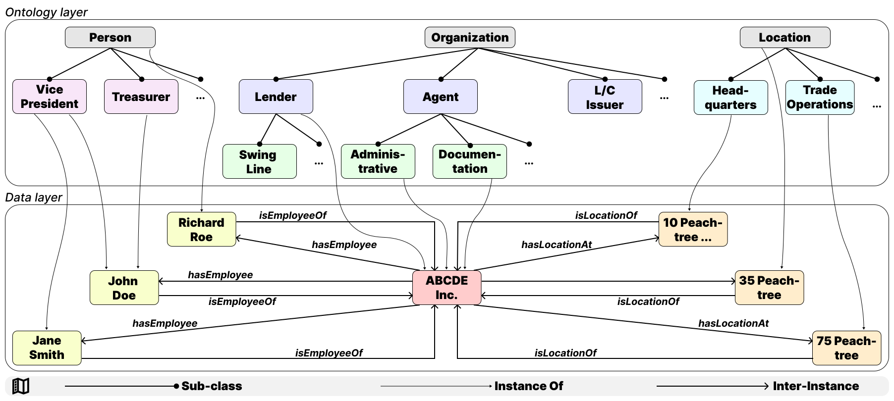

KG-MuLQA: KG-based Long-Context QA Evaluation
ACL 2026 (Oral)
We build a knowledge-graph framework that extracts multi-level QA pairs from long financial credit agreements. We find that even strong long-context LLMs struggle with multi-hop reasoning, set operations, and implicit document relations.